Peta Web Leaflet dengan qgis2leaf
Peringatan
qgis2leaf plugin is no longer in active development. The functionality of
this plugin is folded into a new plugin called qgis2web.
Leaflet adalah sebuah library javascript open-source yang dikenal untuk membangun aplikasi pemetaan berbasis web. Plugin qgis2leaf menyediakan cara yang sederhana untuk mengekspor Peta QGIS anda ke peta web berbasis leaflet yang berfungsi. Plugin ini merupakan cara yang berguna untuk memulai pemetaan berbasis web dan membuat peta web interaktif dari layer data GIS statis.
Tinjauan Tugas
Kita akan membuat sebuah Peta web leaflet untuk Airport Dunia.
Skill lain yang akan anda pelajari
Prosedur
Install plugin qgis2leaf dengan mengakses . Perhatikan bahwa plugin bertanda experimental , jadi anda perlu untuk memberi tanda cek Show also experimental plugins pada pengaturan plugin. (lihat docs/using_plugins untuk detail lebih dalam menginstall plugin di QGIS )

Unzip file hasil unduh ne_10m_airports.zip . Buka QGIS dan akses . Jelajahi lokasi dimana file diekstrak dan pilih ne_10m_airports.shp . Klik OK.
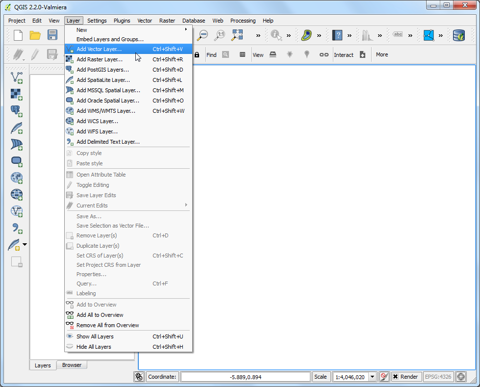
Ketika layer ne_10m_airports terbuka, gunakan tool Identify untuk mengklik fitur mana saja dan melihat attributnya. Kita akan membuat sebuah peta airport dimana kita mengklasifikasijan airport menjadi 3 bagian. Attribut type akan berguna saat kita mengklasifikasi fitur.

Klik kanan pada layer ne_10m_airports dan pilih Open Attribute Table.
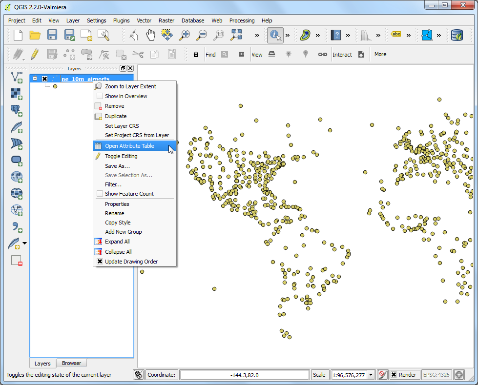
Pada dialog attribut tabel, klik tombol Toggle Editing . Ketika layer berada dalam mode editing, klik tombol Open Field Calculator .
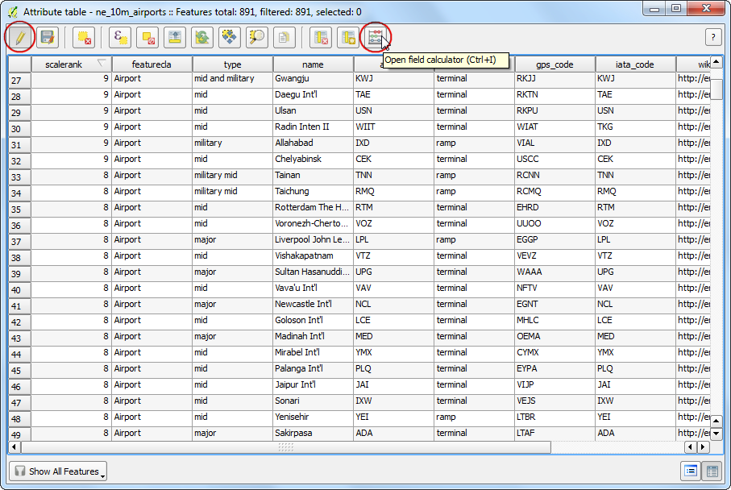
Kita ingin membuat sebuah attribut baru bernama type_code dimana kita memberikan airport besar dengan nilai 3, airport ukuran sedang bernilai 2 dan yang lain bernilai 1. Kita dapat menggunakan statement CASE dan menulis sebuah ekspresi yang akan melihat nilai dari attribut type dan membuat attribut type_code berdasarkan kondisi. Beri tanda cek pada kotak Create a new field dan masukkan type_code sebagai Output field name . Pilih Whole number (integer) sebagai Output field type. Pada jendela :guilabel:`Expression , masukkan teks berikut.
CASE WHEN "type" LIKE '%major%' THEN 3
WHEN "type" LIKE '%mid%' THEN 2
ELSE 1
END
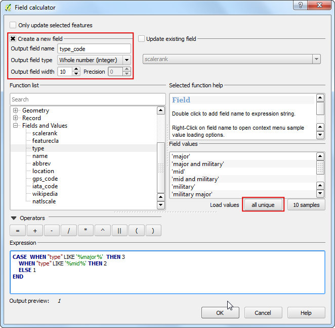
Kembali pada jendela Attribute Table , anda akan melihat kolom baru di akhir. Verifikasi bahwa ekspresi anda bekerja dengan baik dan klik tombol Toggle Editing untuk menyimpan perubahan.
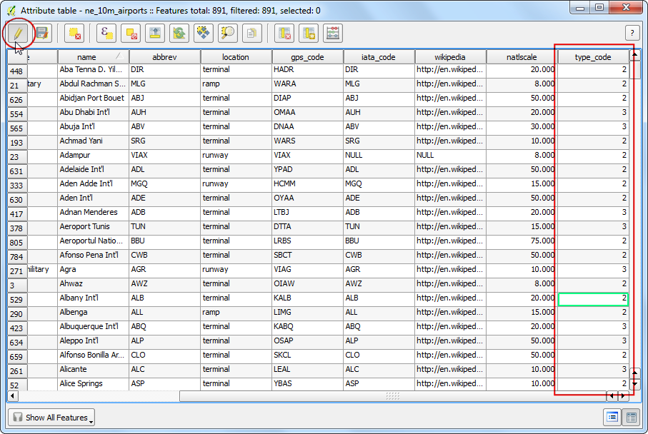
Sekarang anda akan melakukan style menggunakan attribut yang baru dibuat yaitu type_code . Klik kanan layer ne_10m_airports` dan pilih Properties.
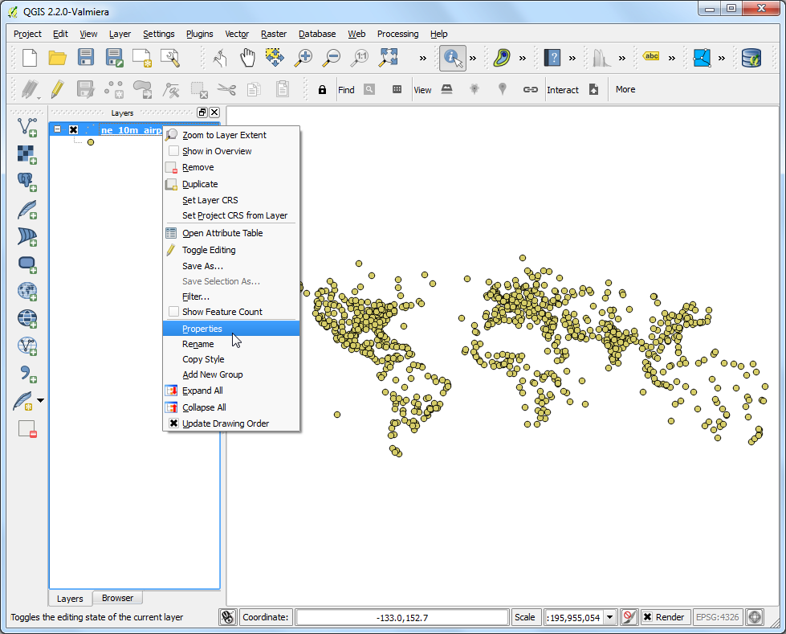
Pilih tab Style pada dialog Layer Properties . Pilih style Categorized dari menu dropdown dan pilih type_code sebagai Column . Pilih color ramp pilhan anda dan klik Classify . Klik OK untuk kembali ke jendela utama QGIS.
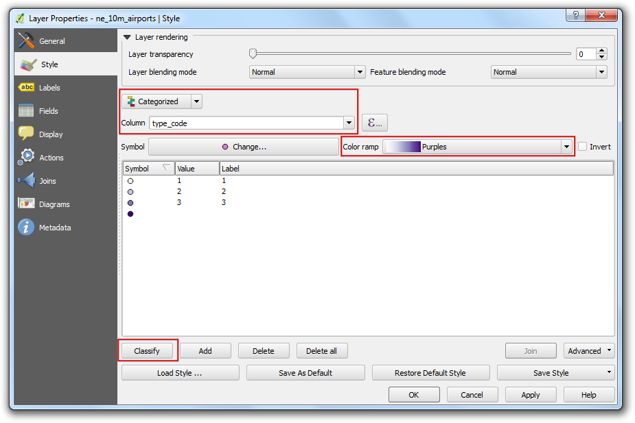
Disini anda akan melihat sebuah airport map yang sudah distyle. Mari ekspor ini untuk membuat sebuah peta web interaktif. Akses .

Pada dialog QGIS 2 Leaflet , klik Get Layers untuk memperoleh daftar layer yang dibuka ulang. Pilih opsi Full screen untuk memiliki sebuah peta web full screen. Pilih layer extent sebagai Extent dari peta yang terekspor. Pilih sebuah Output project folder pada sistem anda di mana plugin akan menulis file output. Klik OK.

Ketika proses ekspor selesai, cari lokasi folder output pada disk anda. Buka file index.html dengan sebuah browser. Anda akan melihat sebuah peta web interaktif yang merupakan sebuah replika dari Peta QGIS. Anda akan menzoom dan pan sekitaran peta dan juga mengklik fitur mana saja untuk memperoleh jendela pop-up dengan informasi attribut. Anda dapat mengkopi isi dari folder ini ke server web agar memiliki peta web yang berfungsi secara penuh.
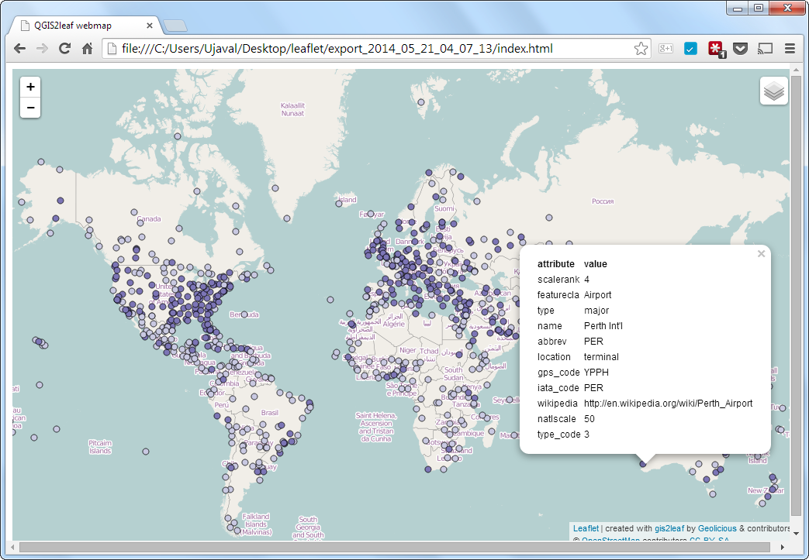
Sekaran kita akan mengeksplor sejumlah kegunaan advance dari plugin ini yang membuat anda dapat mengkustom peta lebih jauh lagi. Jika anda perhatikan, jendela pop-up berisi attribut dari sebuah fitur. Sejumlah attribut tidak begitu berguna dan rata-rata pop-up tidak terlihat baik. Kita akan menganti pop-up awalo dengan HTML kustom kita untuk membuatnya lebih baik. Ini dapat dicapai dengan menambah HTML kustom pada sebuah kolom bernama html_exp , Klik kanan layer ne_10m_airports dan pilih Open Attribute Table.
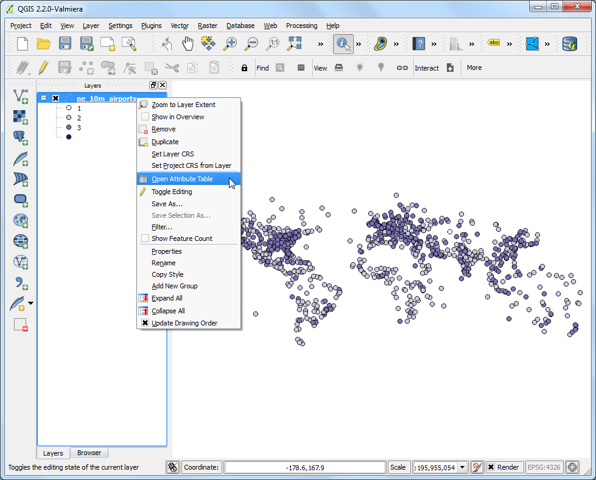
Pada dialog attribut tabel, klik tombol Toggle Editing . Ketika layer berada dalam mode editing, klik tombol Open Field Calculator .
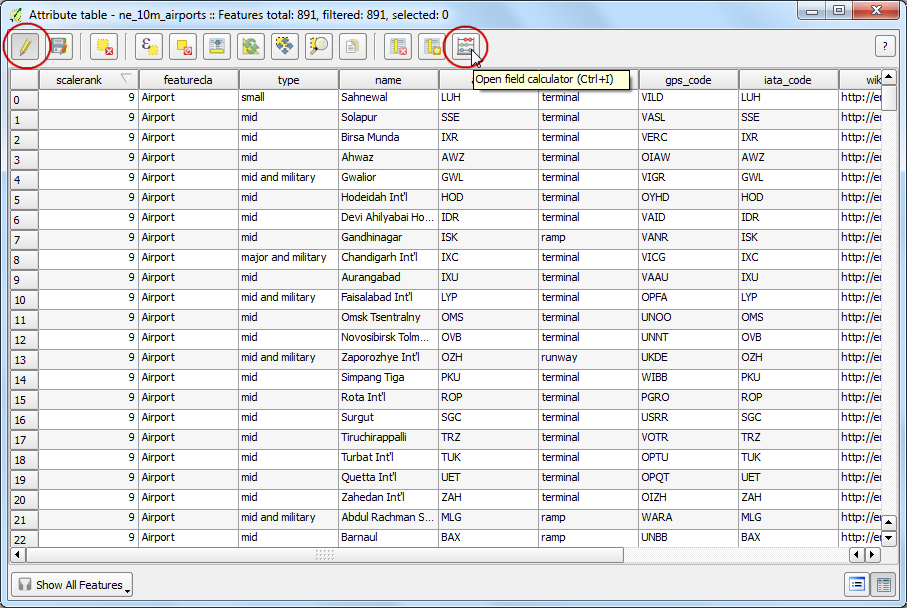
Beri tanda cek pada box Create a new field dan masukkan html_exp sebagai Output field name . Pilih Text (string) sebagai Output field type . Karena kita akan membuat sebuat string HTML yang panjang, pilih 200 untuk Output field width , Masukkan ekspresi berikut pada area Expression . Ekspresi yang terlihat rumit mendefinisikan sebuah tabel HTML dan mengganti nilai cell dari attribut iata_code, name dan type .Beri tanda cek pada Output preview untuk memastikan ekspresinya benar.
concat('<h3>', "iata_code", '</h3><table>', '<tr><td>Airport Name: <b> ',
"name", '</b></td></tr><tr><td>Category: <b> ', "type",
'</b></td></tr></table>')
Catatan
Format shapefile dapat berisi maksimum 254 karakter pada sebuah field. Jika anda ingin menyimpan teks yang lebih panjang, pilih format yang lain.
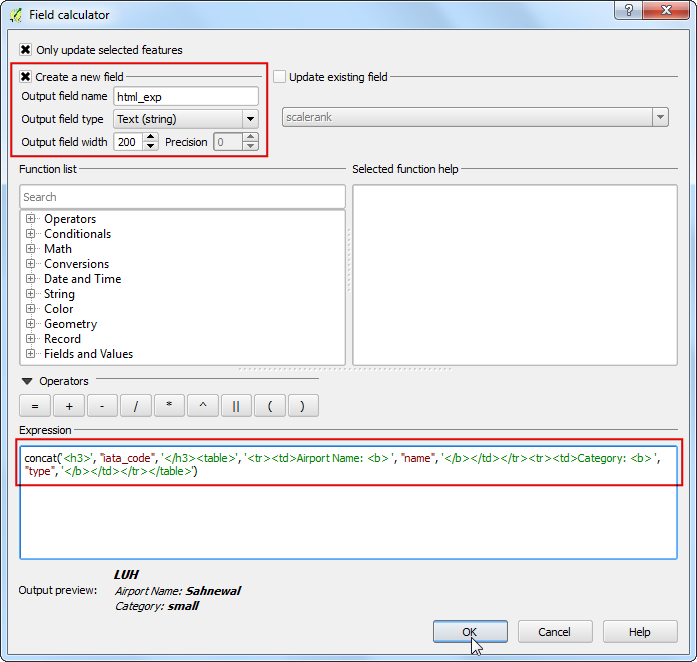
Kembali pada jendela Attribute Table , anda akan melihat kolom baru di akhir. Verifikasi bahwa ekspresi anda bekerja dengan baik dan klik tombol Toggle Editing untuk menyimpan perubahan.
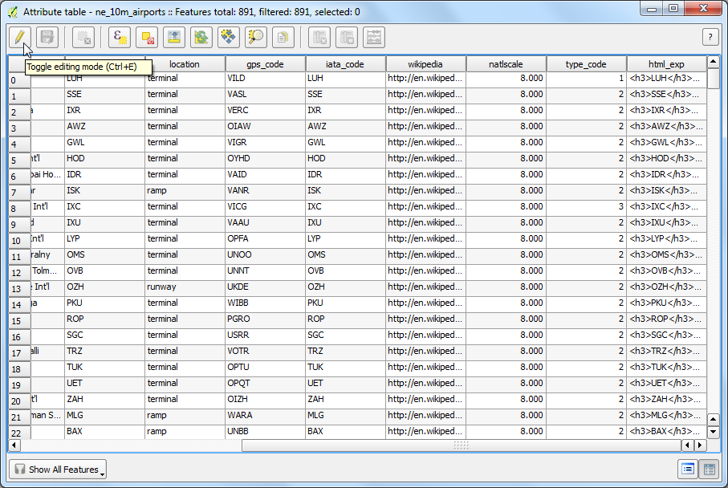
Sekarang ekspor kembali peta menggunakan .
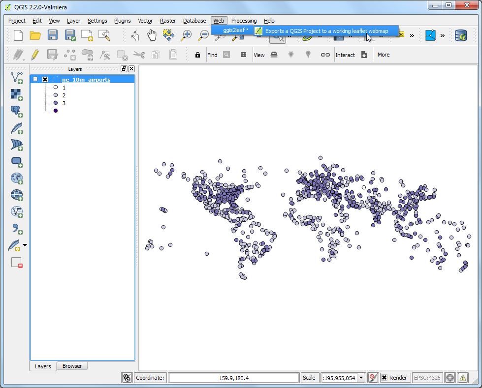
Memilih opsi seperti sebelumnya.
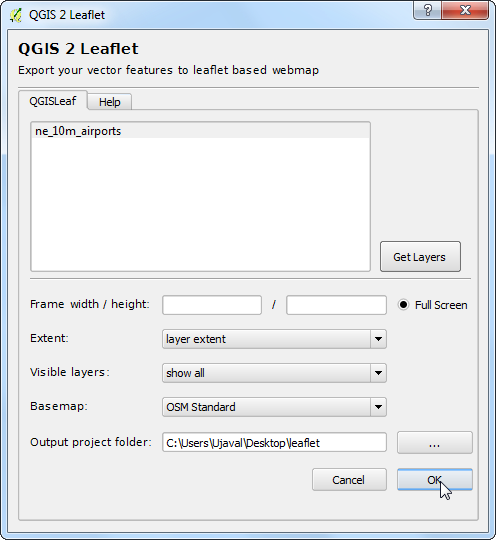
Akses folder output ketika proses eksport selesai. Anda akan memiliki sebuah subfolder dengan waktu aktual. Cari lokasi file xxx dan buka dengan sebuah browser. Klik pada fitur apa saja dan lihat ke jendela pop-up. Anda akan melihat bahwa peta terlihat lebih bersih dan informatif.
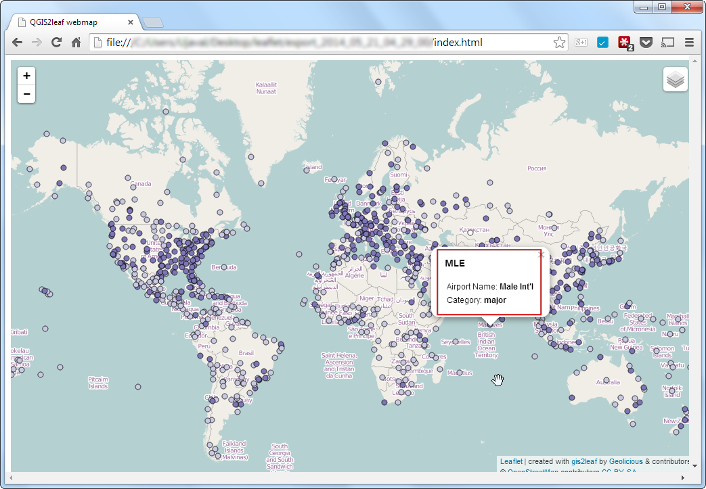
Kegunaan lain dari plugin qgis2leaf adalah kemampuan untuk menentukan sebuah ikon kustom untuk digunakan dengan peta web. Ini terselesaikan dengan menentukan path atau alamat ke ikon kustom di sebuah field bernama icon_exp. Kita akan membuat sebuah layer baru hanya berisi airport besar dan style menggunakan sebuah ikon SVG kustom. Cari lokasi tool Select features using an expression dari toolbar.
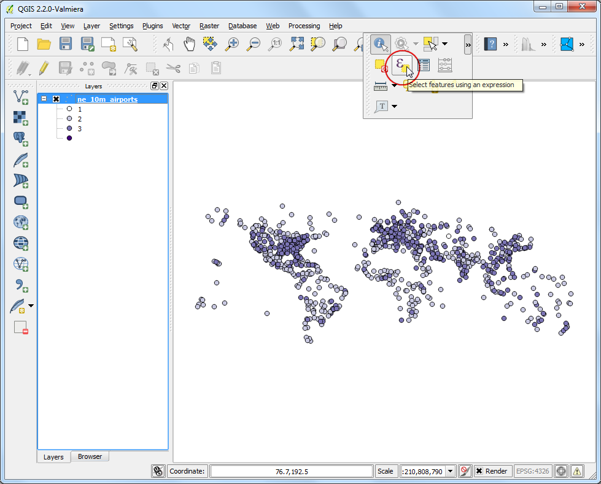
Masukkan ekspresi dibawah dan tekan Select untuk memilih semua airport besar.
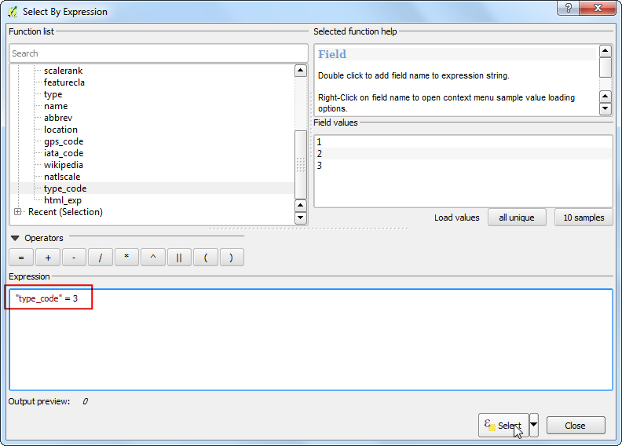
Klik kanan airport ne_10m_airports dan pilih Save Selection As....
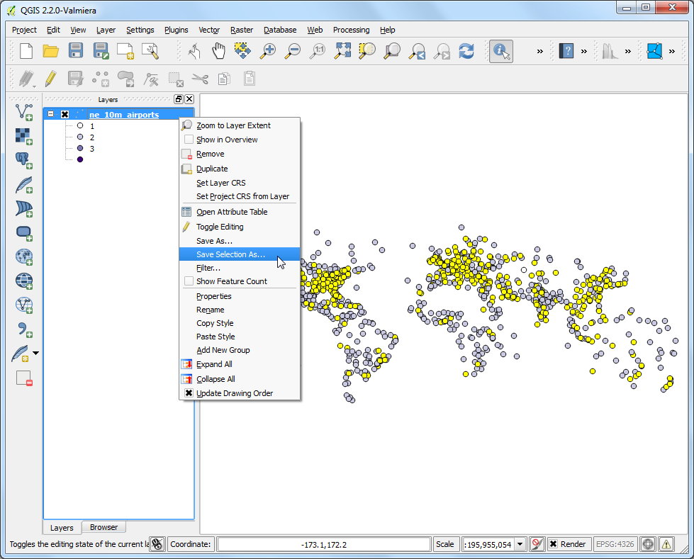
Pada dialog Save vector layer as... , beri nama file output sebagai major_airports.shp . Beri tanda cek pada Add saved file to map dan OK.

Ketika layer major_airports sudah terbuka di QGIS, klik kanan layernya dan pilih Open Attribute Table.

Pada dialog attribut tabel, klik tombol Toggle Editing . Ketika layer berada dalam mode editing, klik tombol Open Field Calculator .

Pada dialog Field Calculator , masukkan icon_exp sebagai Output field name . Buat dalam tipe Text (string) . Pada area Expression , masukkan ekspresi berikut.

Simpan hasil edit dengan mengklik tombol Toggle Editing pada Attribute Table.
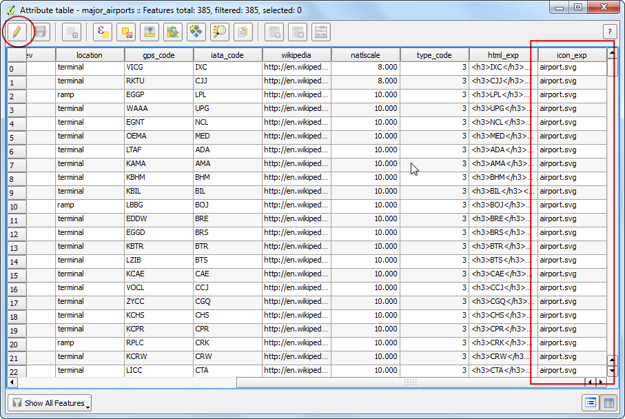
Buka plugin qgis2leaf dari . Klik tombol Get Layers untuk menarik kedua layer dari QGIS. Ada banyak layer yang sudah jadi tersedia sebagai Peta dasar atau basemap. Pada peta ini, kita dapat mencoba sesuatu yang berbeda dan membuka Stamen Watercolor sebagai guilabel:Basemap . Klik OK.

Jika anda ingat kita menentukan airport.svg sebagai ikon untuk airport. Kita perlu untuk menambah ikon tersebut secara manual ke direktori output. Qgis dilengkapi dengan koleksi besar dari ikon. Pada Windows, ikon ini berlokasi di . Path atau alamat mungkin berbeda bergantung pada platform dan tipe installan. Cari lokasi direktori tersebut dan pilih sebuah ikon yang anda minati. Untuk peta kita, kita dapat mencoba ikon amenity=airport.svg yang berlokasi di kategori transport .

Copy dan Paste ikon ini pada direktori putput yang sudah ditentukan saat mengekspor peta. Ganti nama dengan airport.svg.
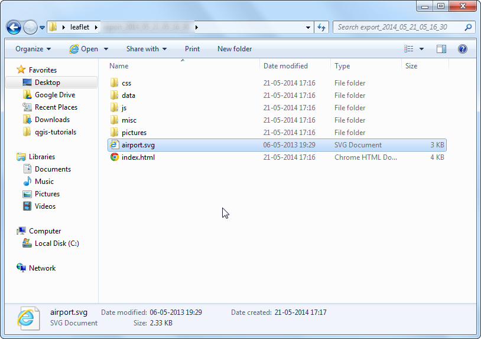
Sekarang buka file index.html yang berlokasi di folder. Anda akan melihat sebuah peta dasar atau basemap yang indah denga ikon kustom kita untuk airport besar. Juga perhatikan panel layer pada sudut kanan atas yang memiliki kontrol tampilanlayer untuk kedua layer.
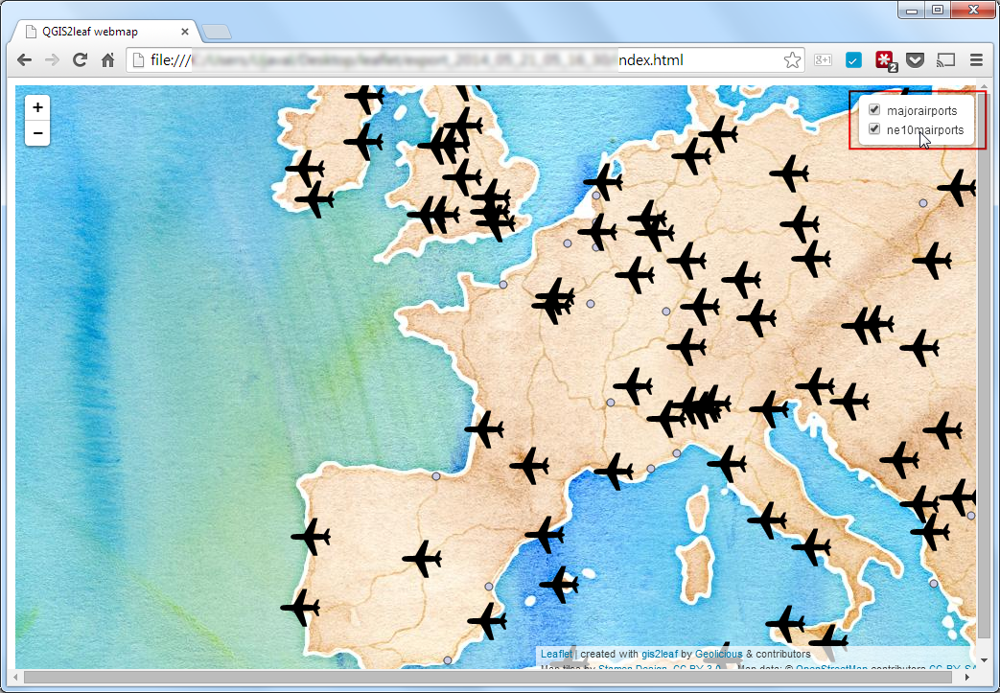
Hope this tutorial gives you a head start in creating web maps. Below is the
live interactive map created for this tutorial.